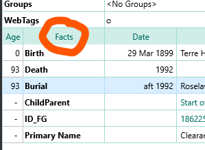

Home
Roots Magic Thesaurus
Fact = Event = Tag
Stored in database table EventTable
RM uses the term Fact for the items that are attached in the person edit window

RM File Properties and Enhanced properties list call them Events.
Other software use the terms 'Event" or "Tag"
Some software differentiates between an Event having a date and a Fact not having a date.
Master Source = Source
Source Detail = Citation
Advanced Search item: name = Master Source - Source Name
Stored in database table SourceTable, column Name
Advanced Search item: text = Master Source - Source Text
In Search and Replace = Sources - Actual text
Stored in database table SourceTable, column ActualText
Advanced Search item: comment = Master Source - Source Comment
In Search and Replace = Sources - Comments
Stored in database table SourceTable, column Comments
Advanced Search item: ref# = Master Source - Source ref#
Stored in database table SourceTable, column RefNumber
Advanced Search item: research note = Citation Details - Research Note
In Search and Replace = Citations - Research notes
Stored in database table CitationTable, column ActualText
Advanced Search item: detail comment = Citation Details - Detail Comment
In Search and Replace = Citations - Comments
Stored in database table CitationTable, column Comments
Advanced Search item: detail ref# = Citation Details - Detail Ref#
Stored in database table CitationTable, column RefNumber